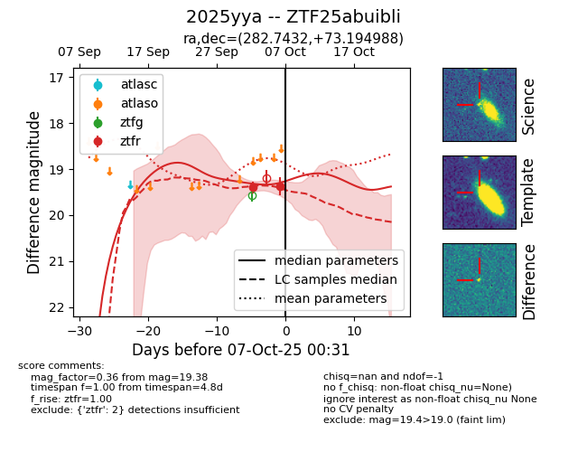
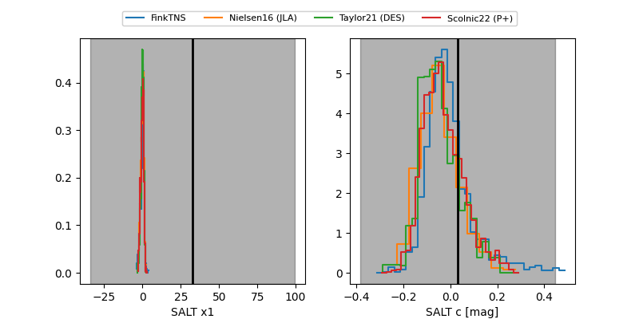

FINK: ZTF25abuibli
Lasair: ZTF25abuibli
ALeRCE: ZTF25abuibli
TNS: 2025yya
YSE: 2025yya
ZTF25abuibli (ztf,fink)
2025yya (tns,yse)
equatorial (ra, dec) = (282.7432,+73.19499)
galactic (l, b) = (104.1821,+25.91473)


last ztfr=19.38
2 ztfr detections